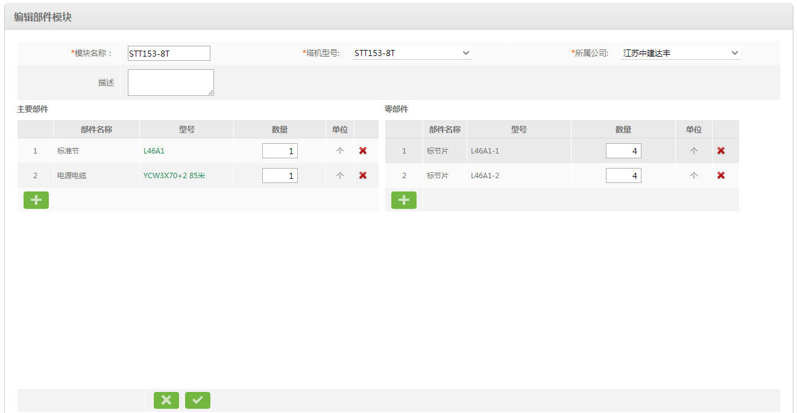

11.8.1、新增（编辑）部件模块

说明：
1、填写部件模块基本信息；
2、点击主要部件下的 添加一条主要部件资料，选择主要部件名称，型号，填写数量，再点击零部件下的添加一条零部件部件资料；点击主要部件型号查看对应零部件信息。
添加一条主要部件资料，选择主要部件名称，型号，填写数量，再点击零部件下的添加一条零部件部件资料；点击主要部件型号查看对应零部件信息。
2、点击 ，保存并返回到上一页面；点击
，保存并返回到上一页面；点击 ，直接返回上一页，所填内容无效。
，直接返回上一页，所填内容无效。